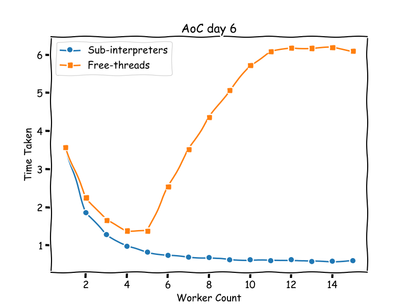

Introduction
I wrote about free-threading recently in How free are threads in Python now?. Where I found some unexpected difficulties parallelising my solution.
In the conclusion section I wrote:
I'm starting to think that the approach sub-interpreters is taking, with brand new concurrency primitives and shared memory data structures has a lot of merits. I like the idea of adding a new dimension of concurrency as opposed to modifying the current. Perhaps I'll try to implement my AOC solution using sub-interpreters.
This week I tried sub-interpreters for the first time and was pleasantly surprised.
Sub-interpreters
The PEP to look at is PEP 734 - Multiple Interpreters in the Stdlib. But this is only possible because of the continued work in PEP 684 - A Per-Interpreter GIL.
In short, instead of achieving parallelism by removing the GIL, we create isolated memory spaces in the same process each paired with a GIL. The isolated memory spaces are the interpreter state, and memory access within the interpreter state is subject to the interpreter's GIL. Different interpreters are then able to run in parallel as they access independent memory spaces.
Certain objects can be shared via sharable objects. This is only possible because the interpreters all live in the same process. In multi-processing this is much harder to achieve.
PEP-734 is not officially accepted for 3.13, but its features are usable via Eric Snow's interpreters package.
AOC Implementation
Full implementation can be found here. I'll focus on the parts that specifically use the specification in the PEP.
Features like channels that are outside of the most recent specification though available are not used.
Types
First I looked at all the types that can be shared between interpreters and it's not so hard to define them as an annotation:
# Create a type so that we can type check what we pass into the shared state.
type Shareable = (
str | bytes | int | float | bool | None | tuple[Shareable, ...] | Queue | memoryview
)
Most shareable types are immutable with the exception of Queue and memoryview. They are the primary ways of passing data in and out of interpreters. Queue.get can also act as a mechanism to synchronise between interpreters.
Interpreter
Interpreters can also be initialised with some global shareable state. For example:
interp.prepare_main(queue=Queue(), value=5)
This is how we pass the Queue or memoryview objects into the interpreters in the first place.
Running code in interpreters requires using Interpreter.exec:
interp = interpreters.create()
interp.exec("print(\"hello world\")")
This is analogous to exec but in the specified interpreter.
There are also other ways to execute code I chose not to use like InterpreterPoolExecutor which don't take advantage of shared objects, or Interpreter.call which places limitations on the function called.
Note: Interpreter.exec executes code in the foreground, so we would also need to wrap it in a thread.
Calling a function
Many of the examples in the PEO use an import inside the interpreter:
interp.exec("""if True:
from mymodule import edit_data
while True:
token = control.get()
edit_data(data)
control.put(token)
""")
This is because functions are objects that are not shareable. So it's often just easier to have the interpreter recreate the function by importing.
My wrapper
Putting this all together, I wrote a wrapper to:
- create interpreters inside thread
- import a function inside the interpreters to execute on input from the task queue
- collect the results and close the interpreters
class Executor:
def __init__(
self,
module: str,
entrypoint: str,
*,
workers: int,
**bind: Shareable,
) -> None:
self.tasks = interpreters.create_queue()
self.results = interpreters.create_queue()
self.bind = bind
self.code = dedent(f"""
from {module} import {entrypoint} as entrypoint
from interpreters_backport import interpreters
tasks = interpreters.Queue({self.tasks.id})
results = interpreters.Queue({self.results.id})
while True:
req = tasks.get()
if req is None:
# Stop!
break
try:
res = entrypoint(*req, {", ".join(f"{name}={name}" for name in bind)})
except Exception as e:
results.put((False, repr(e)))
else:
results.put((True, res))
""")
self.workers = workers
def worker(self) -> None:
interp = interpreters.create()
if self.bind:
interp.prepare_main(**self.bind)
interp.exec(self.code)
interp.close()
@contextmanager
def _get_results(self, expected: int) -> Iterator[Iterator[Shareable]]:
def _iter():
for _ in range(expected):
success, res = cast(
tuple[Literal[True], Shareable] | tuple[Literal[False], str],
self.results.get(),
)
if not success:
raise InterpreterError(res)
yield res
it = _iter()
try:
with closing(it):
yield _iter()
finally:
for _ in range(self.workers):
self.tasks.put(None) # Signal for interpreters to finish
def map(self, its: Iterable[Shareable]) -> Iterator[Shareable]:
threads = [Thread(target=self.worker) for _ in range(self.workers)]
for thread in threads:
thread.start()
tasks = 0
for elem in its:
tasks += 1
self.tasks.put(elem)
with self._get_results(tasks) as results:
yield from results
for t in threads:
t.join()
This is derived from a lot of the examples in the PEP. However, there are a few quirks.
There's a bug preventing me from passing queues inside the interpreters directly, so I used a workaround by passing Queue.id inside the interpreter.
In _get_results we signal termination using self.tasks.put(None). This is done after collecting the results to prevent the interpreter from terminating before we collect objects returned from it.
The following example demonstrates what happens when the interpreters close too soon:
from textwrap import dedent
from interpreters_backport import interpreters
interp = interpreters.create()
queue = interpreters.create_queue()
interp.exec(
dedent(f"""
from interpreters_backport import interpreters
queue = interpreters.Queue({queue.id})
queue.put((1, 2, 3))
""")
)
interp.close()
print(queue.get())
You receive the output interpreters_backport.interpreters.queues.UNBOUND., where (1, 2, 3) is expected.
Running the executor
Modifying my implementation we can run the executor:
candidates = ((start, node) for node in path if node != start)
executor = Executor("implementations.d6", "solve", workers=workers, grid=grid)
with timer(f"{workers = }"):
print("part2", sum(1 for res in executor.map(candidates) if res), end="; ")
where the solve function is located in a module implementations.d6.
Since grid is a constant, it's injected into each interpreter at the start too.
The Results
Results running using 1 to 15 workers. As a reminder we have 11 threads available on my machine.
➜ subinterpreters git:(main) ✗ uv run d6.py
Reading inline script metadata from `d6.py`
part1 4883
part2 1655; workers = 1 3.575728 s elapsed
part2 1655; workers = 2 1.858705 s elapsed
part2 1655; workers = 3 1.284574 s elapsed
part2 1655; workers = 4 0.977416 s elapsed
part2 1655; workers = 5 0.8245 s elapsed
part2 1655; workers = 6 0.739645 s elapsed
part2 1655; workers = 7 0.692572 s elapsed
part2 1655; workers = 8 0.68285 s elapsed
part2 1655; workers = 9 0.623754 s elapsed
part2 1655; workers = 10 0.625284 s elapsed
part2 1655; workers = 11 0.600622 s elapsed
part2 1655; workers = 12 0.627131 s elapsed
part2 1655; workers = 13 0.578773 s elapsed
part2 1655; workers = 14 0.586851 s elapsed
part2 1655; workers = 15 0.600652 s elapsed
This surprised me a lot. After my efforts with free-threading, I was definitely expecting a lot more tweaks before getting anywhere.
Compared to my results of free threading:

The speedup is much more predictable, where free-threading performance bottlenecks very quickly.
My Overall Experience
There's a lot to unpack here, not just on sub-interpreters but also free-threading.
Sub-interpreters are unfinished/unpolished
It's no surprise here. PEP-734 is not yet accepted, so the bugs are understandable.
There's definitely a lack of examples and documentation, but hopefully it's something that the community can help with.
I also think that maybe there's a high level abstraction missing here. The API is inspired by Golang and CSP in general. It's probably not what Pythonistas are most familiar with. Using exec also feels a bit strange. Hopefully the wider community can start creating abstractions that make it more usable.
Free-threading is deceptively hard
In my last post I wrote:
However I'm a bit worried about existing multi-threaded code. Before free-threaded python, threads were used for IO bound operations when the GIL was released. It's going to be a big challenge if one day the GIL is disabled and the performance may become many times slower.
This worries me the most, people are used to threads and that's supposed to be a positive, but in reality they are just used to the GIL.
Sub-interpreters are a new feature so it has an advantage here.
Memory management is key
Despite the awkwardness working with interpreters, when it finally ran it was achieved the goal of speeding up execution. By exposing mechanisms to explicitly manage memory the execution becomes a lot more predictable.
When it comes to free-threading, this is definitely missed. My hope is that over the next few releases we'll see frameworks work on memory management making free threading more viable.
Finally
I wasn't originally planning on using sub-interpreters in the first place, but I'm now fully behind the idea.
I hope it gathers a lot more interest this year and we'll see more interesting use cases and examples.
If this post piqued your interest then there's a lot more resources out there: